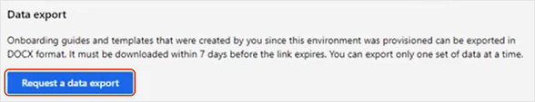

Daten aus Attract und Onboard exportieren
Important
Dynamics 365 Talent: Attract- und Onboard-Apps werden eingestellt. Weitere Informationen finden Sie unter Einstellen von Dynamics 365 Talent: Attract- und Onboard-Apps.
Wie in Ruhestand Dynamics 365 Talent: Attract und Dynamics 365 Talent: OnboardApps angekündigt, ziehen wir Dynamics 365 Talent: Attract und Dynamics 365 Talent: Onboard am 1. Februar 2022 zurück. Um die Migration auf ein anderes Produkt zu erleichtern, bieten beide Apps jetzt Datenexportfunktionen.
Daten aus Attract exportieren
Sie können Ihre Daten exportieren, ohne den Zugriff auf Ihre Umgebung einzuschränken. Möglicherweise möchten Sie dies zu Testzwecken ausführen oder um unsere Datenstruktur verstehen. Wenn Sie zur Migration bereit sind, beschränken Sie den Zugriff auf Ihre Attract-Umgebung mithilfe der Anweisungen nach diesem Verfahren. Stellen Sie sicher, dass Sie Ihre Daten erneut exportieren.
Gehe zu https://aka.ms/AttractDataExport.
Unter Datenexport wählen Sie Datenexport anfordern.

Wenn das Meldungsfeld Ihre Anfrage wird bearbeitet erscheint, wählen Sie OK. Der Datenexport kann je nach Exportgröße bis zu 20 Minuten dauern.
Wenn Ihr Export abgeschlossen ist, wählen Sie die Schaltfläche Herunterladen daneben.
Note
Alle Datenexporte sind sieben Tage lang verfügbar, danach läuft der Link Herunterladen ab.
Der Download enthält eine ZIP-Datei mit Ihren Attract-Daten, einschließlich der folgenden Ordner:
| Ordnername | Beschreibung |
|---|---|
| Administratoreinstellungen | Konfigurationen des Attract Admin Center. |
| Kandidaten | Alle Kandidaten, die zu Jobs oder Talentpools hinzugefügt wurden. |
| E-Mail-Vorlagen | Alle E-Mail-Vorlagen, die für die Umgebung konfiguriert wurden. |
| Jobangebotsvorlagenpaket | Alle erstellten Jobangebotspaketvorlagen sowie die zugehörigen Konfigurationen. |
| Regelsätze für Jobangebote | Alle Regelsatzdateien, die zur Angebotsverwaltung hochgeladen wurden. |
| Jobangebotsvorlagen | Alle Jobangebot-Dokumentvorlagen, die für die Umgebung erstellt wurden. |
| Jobangebote | Alle erstellten Jobs. Gelöschte Jobs werden nicht exportiert. Die Unterordner enthalten Bewerbungsunterlagen mit Unterordnern für Bewerbungsanlagen und Angebotspakete, sofern zutreffend. |
| Jobangebotsvorlagen | Stellenprozessvorlagen, die in der Umgebung konfiguriert wurden. |
| Talentpools | Alle erstellten Talentpools, ihre Beitragslisten und die Kandidatenlisten für die Talentpools. |
| Arbeitskräfte | Liste aller Mitarbeiter, die in der Umgebung anwesend sind, sowie deren Rollen. |
| (Stammordner) | Eine JSON-Schemadatei, die die Datenstrukturfelder beschreibt. |
Zugriff auf Attract beschränken
Wenn Sie zur Migration bereit sind, hindern Sie Nicht-Administratoren daran, auf Ihre Attract-Umgebung zuzugreifen, und exportieren Sie Ihre Daten.
Important
Die Einschränkung des Zugriffs auf Ihre Attract-Umgebung ist dauerhaft und kann nicht rückgängig gemacht werden. Wenn Sie möchten, dass Benutzer ohne Administratorrechte weiterhin auf Ihre Umgebung zugreifen können, überspringen Sie diesen Schritt.
Gehe zu https://aka.ms/AttractDataExport.
Um zu verhindern, dass Nicht-Administratoren auf Ihre Attract-Umgebung zugreifen, klicken Sie unter Zugriff auf diese App beschränken auf Zugriff jetzt beschränken. Durch das Einschränken des Zugriffs werden auch alle aktiven Jobs, die veröffentlicht wurden, gelöscht.

Wenn Sie die Warnung Dies ist eine permanente Veränderung sehen, wählen Sie Zugriff einschränken, um Nicht-Administrator-Benutzer dauerhaft aus dieser Umgebung auszuschließen. Wenn Sie diesen Schritt nicht ausführen möchten, wählen Sie Abbrechen.

Note
Administratoren können weiterhin auf die Datenexport- und Personenberichtseiten zugreifen, nachdem Sie den Zugriff auf die Attract-Umgebung eingeschränkt haben.
Daten aus Onboard exportieren
Wenn Sie bereit sind, können Sie Vorlagen, Handbücher und Kandidatendaten von Onboard herunterladen.
Gehe zu https://aka.ms/OnboardDataExport.
Unter Datenexport wählen Sie Datenexport anfordern.

Wenn das Meldungsfeld Ihre Anfrage wird bearbeitet erscheint, wählen Sie OK. Der Datenexport kann je nach Exportgröße bis zu 20 Minuten dauern.
Wenn Ihr Export abgeschlossen ist, wählen Sie die Schaltfläche Herunterladen daneben.
Note
Ihr Datenexport ist sieben Tage lang verfügbar. Nach sieben Tagen ist der Link Herunterladen abgelaufen und Sie müssen einen neuen Export anfordern, wenn Sie Ihre Daten erneut herunterladen müssen. Wenn Sie einen neuen Datenexport starten, laufen alle vorhandenen Downloads ab, wenn der neue Export erfolgreich war.
Der Download ist eine .zip-Datei, die Folgendes enthält:
Ein Vorlagen-Ordner, der Ihre Onboard-Vorlagen im Word-Dokumentformat enthält.
Ein Guides-Ordner, der Ihre Onboard-Guides im Word-Dokumentformat enthält.
Siehe auch
Einstellen von Dynamics 365 Talent: Attract und Dynamics 365 Talent: Onboard Apps